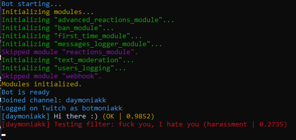
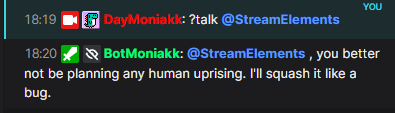
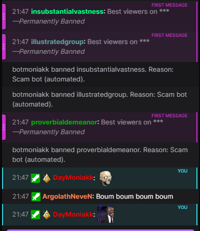
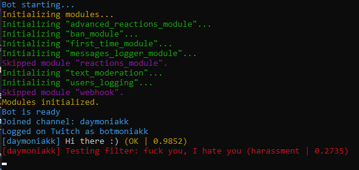
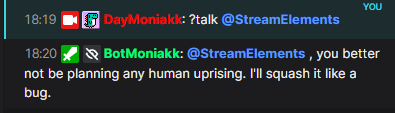
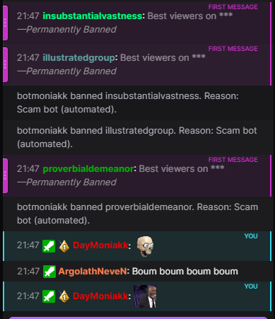

BotMoniakk
 





The bot integrates with the Twitch API and uses the TwitchIO library to interact with the Twitch chat.
Features:
●
The categories are the following:
- Sexual
- Hate
- Violence
- Harassment
- Self-harm
- Sexual / Minors
- Hate / Threatening
- Violence / Graphic
- OK / Not offensive
The AI model used is this one, it is far from perfect but it works.
●
●
The AI model is currently running on my
The LLM used is the lightweight but smart stablelm-zephyr-3b-GGUF model by TheBloke.
●
● Warns me of his actions using
The
(also my